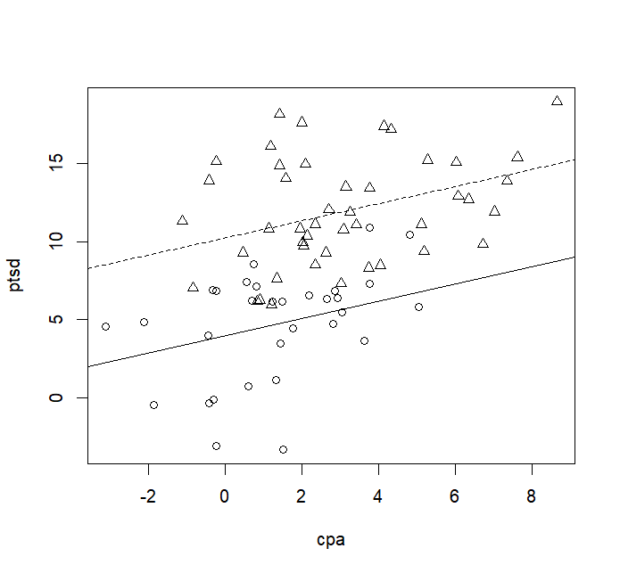
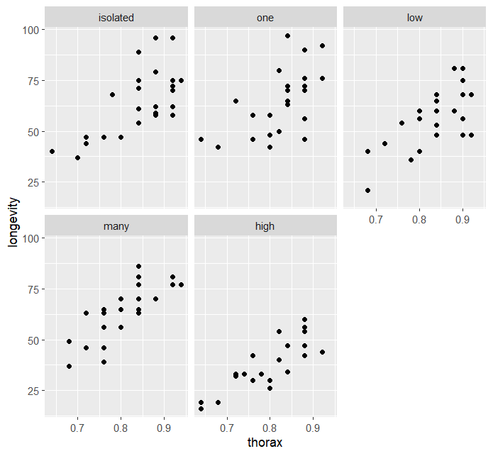
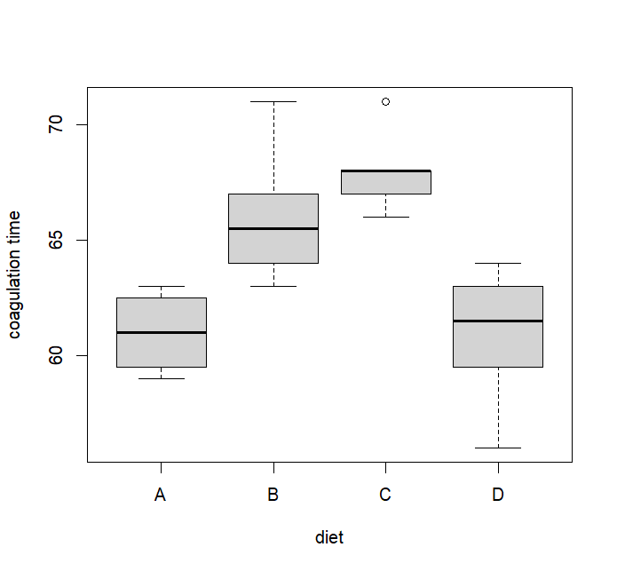
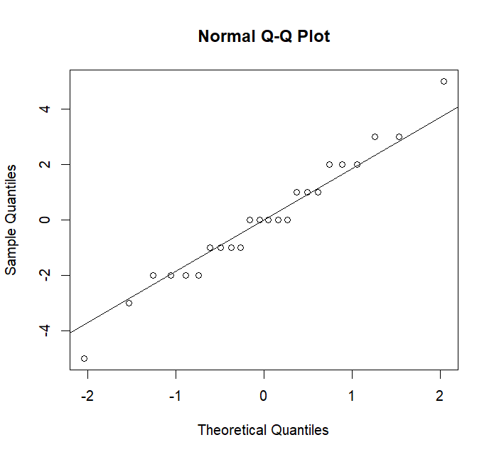
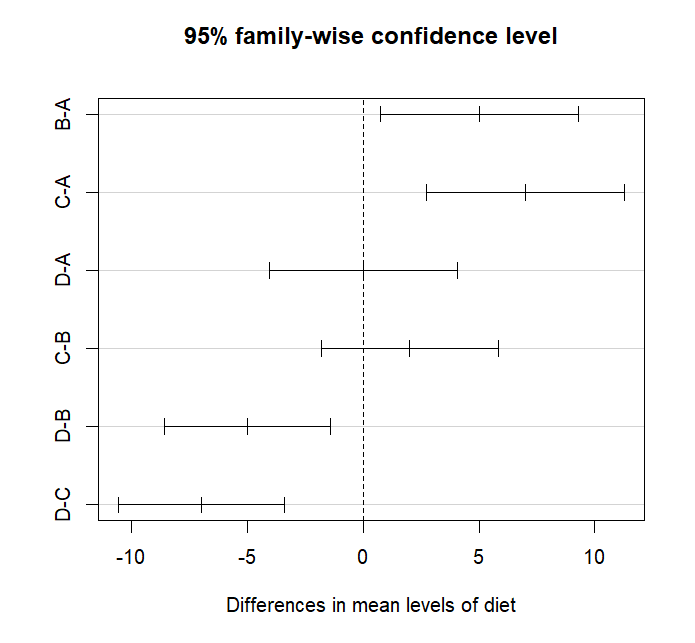

这一讲为实践内容，我们将学习如何使用R语言处理模型中的哑变量，并实现方差分析。
本讲默认读者已经了解R语言的基本语法，能够在自己的电脑中成功编写和运行R脚本。
一、哑变量处理
当回归模型中出现属性变量时，我们应当考虑使用哑变量进行处理。我们来看看如何在R语言中引入哑变量。
1.1 二分类变量的哑变量处理
二分类变量，即属性变量只有两个状态，例如患病与否、质量好坏等等。我们使用faraway包中的sexab数据集进行示例，这是一个描述成年女性在儿童时期受到性别霸凌后的创伤后应激障碍（PTSD）的情况，其中ptsd列表示PTSD的值，cpa列表示身体霸凌的标准尺度值，csa列表示是否遭受过性别霸凌：
> data( sexab, package = "faraway" ) > head( sexab, 3 ) cpa ptsd csa 1 2.04786 9.71365 Abused2 0.83895 6.16933 Abused3 - 0.24139 15.15926 Abused> tail( sexab, 2 ) cpa ptsd csa 75 2.85253 6.84304 NotAbused76 0.81138 7.12918 NotAbused> by( sexab, sexab$ csa, summary) sexab$ csa: Abused cpa ptsd csa Min. : - 1.115 Min. : 5.985 Abused : 45 1 st Qu.: 1.415 1 st Qu.: 9.374 NotAbused: 0 Median : 2.627 Median : 11.313 Mean : 3.075 Mean : 11.941 3 rd Qu.: 4.317 3 rd Qu.: 14.901 Max. : 8.647 Max. : 18.993 - - - - - - - - - - - - - - - - - - - - - - - - - - - - - - - - - - - - - - - - - - - - - sexab$ csa: NotAbused cpa ptsd csa Min. : - 3.1204 Min. : - 3.349 Abused : 0 1 st Qu.: - 0.2299 1 st Qu.: 3.544 NotAbused: 31 Median : 1.3216 Median : 5.794 Mean : 1.3088 Mean : 4.696 3 rd Qu.: 2.8309 3 rd Qu.: 6.838 Max. : 5.0497 Max. : 10.914
显然，这里的csa是个二分变量，我们按照不同水平（遭受性别霸凌/未遭受性别霸凌）进行了分组，在每个组别中对cpa和ptsd进行了描述性统计。那么接下来的问题就是，PTSD是否跟遭受性别霸凌有关呢？有多大关联呢？
通过之前的学习，你应该能想到可以构建线性模型ptsd~csa，但是“性别霸凌”是二分类变量，于是我们应该引入1个哑变量。如何操作呢？对于这个问题，R语言非常的方便，因为它会自动识别分类变量并引入哑变量，你只需按常规写法书写：
> lmod <- lm( ptsd ~ csa, sexab) > summary( lmod) ... Coefficients: Estimate Std. Error t value Pr( > | t| ) ( Intercept) 11.9411 0.5177 23.067 < 2e-16 * * * csaNotAbused - 7.2452 0.8105 - 8.939 2.17e-13 * * * - - - Signif. codes: 0 ‘* * * ’ 0.001 ‘* * ’ 0.01 ‘* ’ 0.05 ‘.’ 0.1 ‘ ’ 1 Residual standard error: 3.473 on 74 degrees of freedom Multiple R- squared: 0.5192 , Adjusted R- squared: 0.5127 F - statistic: 79.9 on 1 and 74 DF, p- value: 2.172e-13 > class ( sexab$ csa) [ 1 ] "factor"
可以看到，我们并没有提前声明任何哑变量，但是回归系数中出现了一个csaNotAbused，这就说明R帮我们自动引入了哑变量。不过，你会发现回归系数中只有csaNotAbused，说明csa中的另一个类——Abused被作为了参考 （reference）。
R语言在引入哑变量时会自动选择参考类（一般是第一条数据所处的类），但有时候我们自己选择别的参考类会更好。在这个例子中，以“非霸凌”为参考是更合适的，我们可以利用内置的relevel()函数指定我们想要作为参考的那一类：
> sexab$ csa <- relevel( sexab$ csa, ref = "NotAbused" ) > lmod <- lm( ptsd ~ csa, sexab) > summary( lmod) ... Coefficients: Estimate Std. Error t value Pr( > | t| ) ( Intercept) 4.6959 0.6237 7.529 1.00e-10 * * * csaAbused 7.2452 0.8105 8.939 2.17e-13 * * * - - - Signif. codes: 0 ‘* * * ’ 0.001 ‘* * ’ 0.01 ‘* ’ 0.05 ‘.’ 0.1 ‘ ’ 1 Residual standard error: 3.473 on 74 degrees of freedom Multiple R- squared: 0.5192 , Adjusted R- squared: 0.5127 F - statistic: 79.9 on 1 and 74 DF, p- value: 2.172e-13
仅仅处理二分类变量还不够，我们还需要考虑加入其他连续变量进行混合分析。对于sexab数据集来说，我们还漏了一个变量——cpa，这是一个连续变量，我们一同将其考虑在模型当中。为了不失一般性，我们还引入二者的交互项：
> lmod4 <- lm( ptsd ~ cpa+ csa+ cpa: csa, sexab) > summary( lmod4) ... Coefficients: Estimate Std. Error t value Pr( > | t| ) ( Intercept) 3.6959 0.7107 5.201 1.79e-06 * * * cpa 0.7640 0.3038 2.515 0.0142 * csaAbused 6.8612 1.0747 6.384 1.48e-08 * * * cpa: csaAbused - 0.3140 0.3685 - 0.852 0.3970 - - - Signif. codes: 0 ‘* * * ’ 0.001 ‘* * ’ 0.01 ‘* ’ 0.05 ‘.’ 0.1 ‘ ’ 1 Residual standard error: 3.279 on 72 degrees of freedom Multiple R- squared: 0.5828 , Adjusted R- squared: 0.5654 F - statistic: 33.53 on 3 and 72 DF, p- value: 1.133e-13
可以看到，交互项不显著，所以我们去掉交互项，再试一个更简化的模型：
> lmod3 <- lm( ptsd ~ cpa+ csa, sexab) > summary( lmod3) ... Coefficients: Estimate Std. Error t value Pr( > | t| ) ( Intercept) 3.9753 0.6293 6.317 1.87e-08 * * * cpa 0.5506 0.1716 3.209 0.00198 * * csaAbused 6.2728 0.8219 7.632 6.91e-11 * * * - - - Signif. codes: 0 ‘* * * ’ 0.001 ‘* * ’ 0.01 ‘* ’ 0.05 ‘.’ 0.1 ‘ ’ 1 Residual standard error: 3.273 on 73 degrees of freedom Multiple R- squared: 0.5786 , Adjusted R- squared: 0.5671 F - statistic: 50.12 on 2 and 73 DF, p- value: 2.002e-14
现在都很显著了。为了展示哑变量对模型的贡献，我们绘制这样一个图：以ptsd为纵轴，以cpa为横轴绘制散点图，并且根据霸凌情况csa对每一类点用不同图案标记。之后绘制两条趋势线，两条趋势线都以cpa的回归系数为斜率，实线以截距项为截距，虚线以截距项+csaAbused为截距：
> plot( ptsd ~ cpa, sexab, pch= as.numeric ( csa) ) > abline( 3.98 , 0.551 ) > abline( 3.98 + 6.27 , 0.551 , lty= 2 )

可以看到，实线是非霸凌组（圆圈）的趋势线，虚线是霸凌组（三角）的趋势线。二分类哑变量的本质是为模型增加了一个截距，也就是说，是表征两个类别的基线存在差异。
1.2 多分类变量的哑变量处理
在考虑了二分类变量之后，我们现在来考虑多分类变量。我们已经知道，如果有k k k k − 1 k-1 k − 1
我们来看这个数据集。faraway包中的fruitfly数据集记录了125只雄性果蝇的寿命longevity和胸腔长度thorax。同时，这些果蝇被分为5组，且每一组的每一只果蝇都单独放置：第1组只有25只雄性果蝇；第2组每天会送进1只处女蝇；第3组每天会送进8只处女蝇；第4组和第5组每天分别送进1只和8只怀孕果蝇。不同的配置会导致雄性果蝇的活性，分别记为isolated、low、high、one、many。
接下来我们来探讨，不同活性的雄性果蝇的寿命和胸腔长度的关系。我们先进行可视化，即分别对不同活性的果蝇绘制散点图：
> data( fruitfly, package = "faraway" ) > require( ggplot2) > ggplot( aes( x= thorax, y= longevity) , data= fruitfly) + geom_point( ) + facet_wrap( ~ activity)

接下来我们拟合线性回归，R语言还是会帮我们自动设定哑变量：
> lmod <- lm( longevity ~ thorax* activity, fruitfly) > summary( lmod) ... Coefficients: Estimate Std. Error t value Pr( > | t| ) ( Intercept) - 50.2420 21.8012 - 2.305 0.023 * thorax 136.1268 25.9517 5.245 7.27e-07 * * * activityone 6.5172 33.8708 0.192 0.848 activitylow - 7.7501 33.9690 - 0.228 0.820 activitymany - 1.1394 32.5298 - 0.035 0.972 activityhigh - 11.0380 31.2866 - 0.353 0.725 thorax: activityone - 4.6771 40.6518 - 0.115 0.909 thorax: activitylow 0.8743 40.4253 0.022 0.983 thorax: activitymany 6.5478 39.3600 0.166 0.868 thorax: activityhigh - 11.1268 38.1200 - 0.292 0.771 - - - Signif. codes: 0 ‘* * * ’ 0.001 ‘* * ’ 0.01 ‘* ’ 0.05 ‘.’ 0.1 ‘ ’ 1 Residual standard error: 10.71 on 114 degrees of freedom Multiple R- squared: 0.6534 , Adjusted R- squared: 0.626 F - statistic: 23.88 on 9 and 114 DF, p- value: < 2.2e-16
R自动帮我们选择了activityisolated作为参考类，这也是我们想要的结果。
值得注意的是，不同软件对响应变量的方差分解方法不同，所以在公式中变量的顺序很重要。对于双因素方差分析来说（不难发现上面这个公式就是一个双因素方差分析），y~A*B和y~B*A有可能是两种模型，这是因为，对于y~A*B，方差分解方法有三种：
Ⅰ型（序贯型，sequential）：先分解A，再固定A分解B，最后固定A和B分解A:B
Ⅱ型（层次型，hierarchical）：分解A时固定B，分解B时固定A，分解A:B时固定A和B
Ⅲ型（边缘型，marginal）：分解某一项时固定剩余所有项
对于R语言来说，默认使用Ⅰ型，适合于平衡数据，此时y~A*B和y~B*A就是一样的；而对于SAS和SPSS来说默认使用Ⅲ型，适合于非平衡的数据，那么此时y~A*B和y~B*A就不一样，我们在使用时要注意区分。不过这一讲我们只考虑平衡数据。
接下来我们看看是否可以简化模型，你可以采用之前我们学习过的各种方法，最终发现交叉项是不显著的，于是模型可以简化为：
> lmod <- lm( longevity ~ thorax+ activity, fruitfly) > summary( lmod) ... Coefficients: Estimate Std. Error t value Pr( > | t| ) ( Intercept) - 48.749 10.850 - 4.493 1.65e-05 * * * thorax 134.341 12.731 10.552 < 2e-16 * * * activityone 2.637 2.984 0.884 0.3786 activitylow - 7.015 2.981 - 2.353 0.0203 * activitymany 4.139 3.027 1.367 0.1741 activityhigh - 20.004 3.016 - 6.632 1.05e-09 * * * - - - Signif. codes: 0 ‘* * * ’ 0.001 ‘* * ’ 0.01 ‘* ’ 0.05 ‘.’ 0.1 ‘ ’ 1 Residual standard error: 10.54 on 118 degrees of freedom Multiple R- squared: 0.6527 , Adjusted R- squared: 0.638 F - statistic: 44.36 on 5 and 118 DF, p- value: < 2.2e-16
二、单因素方差分析
上一节我们学习了R语言对哑变量的处理方法，接下来我们开始实现方差分析。我们先从简单的单因素方差分析开始。
2.1 模型拟合
对于单因素方差分析，我们使用far包的coagulation数据集。该数据集记录了受试者食用不同的菜谱diet和其对应的凝血时间coag：
> data( coagulation, package = "faraway" ) > head( coagulation, 3 ) coag diet 1 62 A2 60 A3 63 A> tail( coagulation, 3 ) coag diet 22 64 D23 63 D24 59 D
在拟合之前我们有必要进行一些探索性的描述统计。对于自变量是属性变量/分类变量的，我们可以使用箱线图画出不同水平下响应变量的分布情况：
> plot( coag ~ diet, coagulation, ylab= "coagulation time" )

可以看到，不同的菜谱对凝血时间有一定的影响，我们可以考虑使用方差分析来判断不同菜谱对凝血时间的影响是否有差异。R语言实现方差分析有两种方式：一种是使用lm()，当成普通的线性回归模型去处理（上一节的内容）；另一种是使用aov()，能直接给出方差分析表。这里我们都尝试一下。
我们首先使用线性回归模型来拟合：
> lmod <- lm( coag ~ diet, coagulation) > summary( lmod) ... Coefficients: Estimate Std. Error t value Pr( > | t| ) ( Intercept) 6.100e+01 1.183e+00 51.554 < 2e-16 * * * dietB 5.000e+00 1.528e+00 3.273 0.003803 * * dietC 7.000e+00 1.528e+00 4.583 0.000181 * * * dietD 2.719e-15 1.449e+00 0.000 1.000000 ... > anova( lmod) Analysis of Variance Table Response: coag Df Sum Sq Mean Sq F value Pr( > F ) diet 3 228 76.0 13.571 4.658e-05 * * * Residuals 20 112 5.6 - - - Signif. codes: 0 ‘* * * ’ 0.001 ‘* * ’ 0.01 ‘* ’ 0.05 ‘.’ 0.1 ‘ ’ 1
可以看到，这里R语言把dietA设置为参考类，其主效应值为61（截距项），剩下三个水平的额外效应分别为+5、+7、0。之后直接调用anova()函数，就可以比较不同水平之间是否具有显著差别，也就是构建我们熟悉的方差分析表。
aov()函数更为直接，它直接返回的就是方差分析表，写法和lm()类似：
> fit <- aov( coag ~ diet, coagulation) > summary( fit) Df Sum Sq Mean Sq F value Pr( > F ) diet 3 228 76.0 13.57 4.66e-05 * * * Residuals 20 112 5.6 - - - Signif. codes: 0 ‘* * * ’ 0.001 ‘* * ’ 0.01 ‘* ’ 0.05 ‘.’ 0.1 ‘ ’ 1
这两种方法的区别在于：
如果你只想判断不同水平之间的差异是否显著，那么使用aov()会更直接；
如果你还想知道主效应、额外效应的具体数值是多少，那么使用lm()会更好。
2.2 模型诊断
对于方差分析模型，我们一般检验残差的两个性质：正态性和方差齐性。
对于残差正态性，我们仍然可以使用第5讲中学过的Q-Q图以及shapiro-wilk检验来完成：
> qqnorm( residuals( lmod) ) > qqline( residuals( lmod) ) > shapiro.test( residuals( lmod) ) Shapiro- Wilk normality test data: residuals( lmod) W = 0.97831 , p- value = 0.8629

由于同一个处理组的残差很接近，所以你会发现在Q-Q图中数据是离散分层的，然而它们的趋势是符合理论正态分位数直线的。另外，从shapiro-wilk检验也发现p值不显著，说明残差是服从正态分布的。
残差的方差齐性检验是指检验不同水平之间的方差是否相等，在理论部分中我们也介绍了很多方法，这里我们展示Levene检验和bartlett检验，其他方法可自行搜索相关包：
> library( car) > leveneTest( coag ~ diet, coagulation) Levene Test for Homogeneity of Variance ( center = median) Df F value Pr( > F ) group 3 0.6492 0.5926 20 > bartlett.test( coag ~ diet, coagulation) Bartlett test of homogeneity of variances data: coag by diet Bartlett K- squared = 1.668 , df = 3 , p- value = 0.6441
可以看到，p值都不显著，说明方差齐性的条件是满足的。
2.3 多重比较
得到显著结果以后，我们需要进行多重比较。这里我们使用更流行的Tukey法。要实现Tukey多重比较，我们可以使用R内置的TukeyHSD()来完成。需要注意的是，TukeyHSD()接受的是方差分析表，所以只接受aov()返回的模型：
> ( tci <- TukeyHSD( aov( coag ~ diet, coagulation) ) ) Tukey multiple comparisons of means 95 % family- wise confidence level Fit: aov( formula = coag ~ diet, data = coagulation) $ diet diff lwr upr p adj B- A 5 0.7245544 9.275446 0.0183283 C- A 7 2.7245544 11.275446 0.0009577 D- A 0 - 4.0560438 4.056044 1.0000000 C- B 2 - 1.8240748 5.824075 0.4766005 D- B - 5 - 8.5770944 - 1.422906 0.0044114 D- C - 7 - 10.5770944 - 3.422906 0.0001268 > plot( tci)

TukeyHSD()返回了每一个对照的置信区间，plot()将置信区间绘制了出来。从图上来看，如果置信区间包含了0，那就说明无明显差异。
无论是从p值还是置信区间图来看，A和D之间没有显著差别（甚至它俩的效应值一样），B和C之间也没有显著差别。但是剩余的组合差异还是很显著的。
三、双因素方差分析
有了前面单因素方差分析的基础，做双因素方差分析也就不是难题了。下面只展示如何拟合和检验，多重比较与诊断请效仿上面的内容自主进行。
3.1 无重复无交互双因素的情形
无重复是指每一组水平下只有一个观测值，无交互是指因素之间的交互项不存在。
我们以faraway包中的composite数据集为例。该数据集记录了热塑性复合物的强度strength以及对应制作时的激光强度laser和条带速度tape：
> data( composite, package = "faraway" ) > head( composite, 9 ) strength laser tape 1 25.66 40 W slow2 29.15 50 W slow3 35.73 60 W slow4 28.00 40 W medium5 35.09 50 W medium6 39.56 60 W medium7 20.65 40 W fast8 29.79 50 W fast9 35.66 60 W fast
为了直切主题，这里我们省去描述性统计，直接进行双因素方差分析：
> lmod <- lm( strength ~ laser* tape, composite) > summary( lmod) ... Coefficients: Estimate Std. Error t value Pr( > | t| ) ( Intercept) 25.66 NaN NaN NaN laser50W 3.49 NaN NaN NaN laser60W 10.07 NaN NaN NaN tapemedium 2.34 NaN NaN NaN tapefast - 5.01 NaN NaN NaN laser50W: tapemedium 3.60 NaN NaN NaN laser60W: tapemedium 1.49 NaN NaN NaN laser50W: tapefast 5.65 NaN NaN NaN laser60W: tapefast 4.94 NaN NaN NaN Residual standard error: NaN on 0 degrees of freedom Multiple R- squared: 1 , Adjusted R- squared: NaN F - statistic: NaN on 8 and 0 DF, p- value: NA
你会惊奇的发现，除了估计的效应值，其他统计推断都无法完成。出现这种状况的一个可能的原因是，每组水平下只有一次观测，所以交互项是没有办法检出的 。因此，这里我们只能放弃交互项：
> lmod <- lm( strength ~ laser+ tape, composite) > summary( lmod) ... Coefficients: Estimate Std. Error t value Pr( > | t| ) ( Intercept) 23.918 1.208 19.803 3.84e-05 * * * laser50W 6.573 1.323 4.968 0.007661 * * laser60W 12.213 1.323 9.231 0.000765 * * * tapemedium 4.037 1.323 3.051 0.037991 * tapefast - 1.480 1.323 - 1.119 0.325944 - - - Signif. codes: 0 ‘* * * ’ 0.001 ‘* * ’ 0.01 ‘* ’ 0.05 ‘.’ 0.1 ‘ ’ 1 Residual standard error: 1.62 on 4 degrees of freedom Multiple R- squared: 0.963 , Adjusted R- squared: 0.9259 F - statistic: 26 on 4 and 4 DF, p- value: 0.004013 > anova( lmod) Analysis of Variance Table Response: strength Df Sum Sq Mean Sq F value Pr( > F ) laser 2 224.184 112.092 42.6893 0.002003 * * tape 2 48.919 24.459 9.3151 0.031242 * Residuals 4 10.503 2.626 - - - Signif. codes: 0 ‘* * * ’ 0.001 ‘* * ’ 0.01 ‘* ’ 0.05 ‘.’ 0.1 ‘ ’ 1
3.2 有重复无交互双因素的情形
3.1小节我们谈到，由于每组水平下只有一次观测，导致模型的交互项无法检出，从而之后的所有统计推断都无法进行。那么这里我们再看一个有多次观测的数据集pvc。该数据集记录了PVC塑料的颗粒大小pszie和3位操作员编号operator以及8台设备resin之间的数据，每一位操作员都对同一台机器操作了2次，因此一共有3 × 8 × 2 = 48 3\times8\times2=48 3 × 8 × 2 = 48
> data( pvc, package = "faraway" ) > head( pvc) psize operator resin 1 36.2 1 1 2 36.3 1 1 3 35.3 1 2 4 35.0 1 2 5 30.8 1 3 6 30.6 1 3
此时如果我们考虑交互项，就可以进行统计推断了：
> lmod <- lm( psize ~ operator* resin, pvc) > anova( lmod) Analysis of Variance Table Response: psize Df Sum Sq Mean Sq F value Pr( > F ) operator 2 20.718 10.359 7.0072 0.00401 * * resin 7 283.946 40.564 27.4388 5.661e-10 * * * operator: resin 14 14.335 1.024 0.6926 0.75987 Residuals 24 35.480 1.478 - - - Signif. codes: 0 ‘* * * ’ 0.001 ‘* * ’ 0.01 ‘* ’ 0.05 ‘.’ 0.1 ‘ ’ 1
可以很明显地看到，交互项是不显著的。因此我们有理由删去交互项，再看看主效应和额外效应的情况：
> lmod <- lm( psize ~ operator+ resin, pvc) > summary( lmod) ... Coefficients: Estimate Std. Error t value Pr( > | t| ) ( Intercept) 36.2396 0.5226 69.345 < 2e-16 * * * operator2 - 0.2625 0.4048 - 0.648 0.52059 operator3 - 1.5063 0.4048 - 3.721 0.00064 * * * resin2 - 1.0333 0.6610 - 1.563 0.12630 resin3 - 5.8000 0.6610 - 8.774 1.13e-10 * * * resin4 - 6.1833 0.6610 - 9.354 2.11e-11 * * * resin5 - 4.8000 0.6610 - 7.261 1.09e-08 * * * resin6 - 5.4500 0.6610 - 8.245 5.46e-10 * * * resin7 - 2.9167 0.6610 - 4.412 8.16e-05 * * * resin8 - 0.1833 0.6610 - 0.277 0.78302 - - - Signif. codes: 0 ‘* * * ’ 0.001 ‘* * ’ 0.01 ‘* ’ 0.05 ‘.’ 0.1 ‘ ’ 1 Residual standard error: 1.145 on 38 degrees of freedom Multiple R- squared: 0.8595 , Adjusted R- squared: 0.8262 F - statistic: 25.82 on 9 and 38 DF, p- value: 1.474e-13
这里的intercept就是操作员1操作第1台机器的主效应，那么为了使最终的颗粒更小，我们更希望选择操作员3来操作第4台机器。
3.3 有重复有交互的情形
有了3.1小节和3.2小节的基础，我们推广到更一般的情形，即存在重复观测并且交互项显著的情形。这里我们使用R内置数据集warpbreaks，该数据集记录了羊毛的经纱断裂数breaks和2种羊毛材质wool以及纺织机的3个张力水平tension的数据：
> head( warpbreaks, 3 ) breaks wool tension 1 26 A L2 30 A L3 54 A L> tail( warpbreaks, 3 ) breaks wool tension 52 15 B H53 16 B H54 28 B H
你当然可以通过lm(breaks ~ wool*tension, warpbreaks)来建模，不过经过简单的残差诊断，这里或许用sqrt(breaks)更好：
> lmod <- lm( sqrt ( breaks) ~ wool* tension, warpbreaks) > summary( lmod) ... Coefficients: Estimate Std. Error t value Pr( > | t| ) ( Intercept) 6.5476 0.3266 20.046 < 2e-16 * * * woolB - 1.3094 0.4619 - 2.835 0.006692 * * tensionM - 1.7216 0.4619 - 3.727 0.000511 * * * tensionH - 1.6912 0.4619 - 3.661 0.000625 * * * woolB: tensionM 1.7821 0.6533 2.728 0.008874 * * woolB: tensionH 0.7553 0.6533 1.156 0.253350 - - - Signif. codes: 0 ‘* * * ’ 0.001 ‘* * ’ 0.01 ‘* ’ 0.05 ‘.’ 0.1 ‘ ’ 1 Residual standard error: 0.9799 on 48 degrees of freedom Multiple R- squared: 0.3606 , Adjusted R- squared: 0.294 F - statistic: 5.415 on 5 and 48 DF, p- value: 0.0004998 > anova( lmod) Analysis of Variance Table Response: sqrt ( breaks) Df Sum Sq Mean Sq F value Pr( > F ) wool 1 2.902 2.9019 3.0222 0.088542 . tension 2 15.892 7.9458 8.2752 0.000817 * * * wool: tension 2 7.201 3.6007 3.7500 0.030674 * Residuals 48 46.089 0.9602 - - - Signif. codes: 0 ‘* * * ’ 0.001 ‘* * ’ 0.01 ‘* ’ 0.05 ‘.’ 0.1 ‘ ’ 1
可以看到这里交互项显著了，所以尽管wool本身不显著，但是交互项的存在使得它必须要留下来。